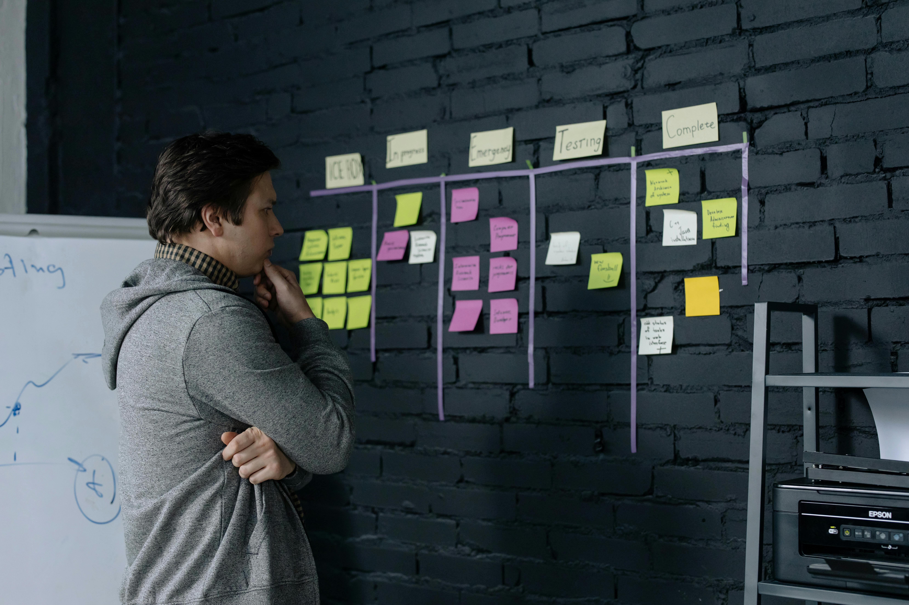

[Featured Projects]

Welcome! My name is Ben Drewelow. I'm an accomplished teacher and aspiring instructional designer. I am passionate about creating effective and engaging instruction that is accessible to all learners. Thanks for visiting!
